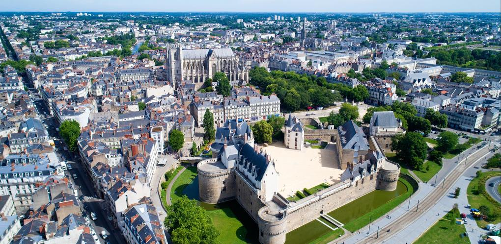

Hometown
Saint-Herblain, on the edge of Nantes
I grew up in Saint-Herblain, a town of just over 50,000 people on the western edge of Nantes, in the Loire-Atlantique department of western France. It's the second-largest town in the Nantes Métropole area, right after Nantes itself — close enough to share its trams and its river, but with its own town centre and identity.

A town built around Nantes' industry
Like much of the area, Saint-Herblain grew alongside Nantes' industrial and shipbuilding past. Today it's a mix of residential neighbourhoods, business parks, and green space, while the city centre of Nantes — a short tram ride away — carries most of the historic and cultural landmarks.
Why I mention Nantes so much
Saint-Herblain doesn't really exist on its own in most people's minds — it's understood as part of Nantes. So for the rest of this site, "hometown" really means the Nantes area as a whole: the river, the food, and the places worth visiting are all part of the same story.